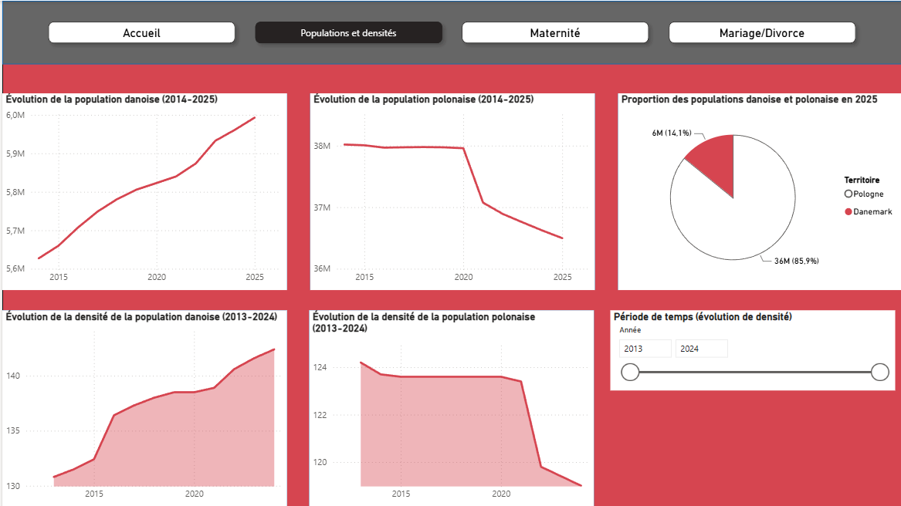
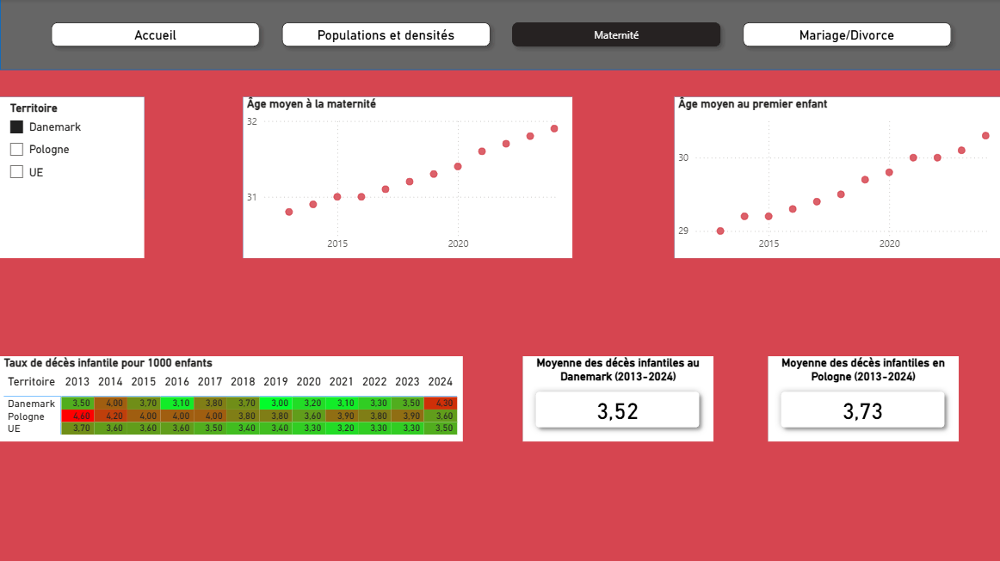
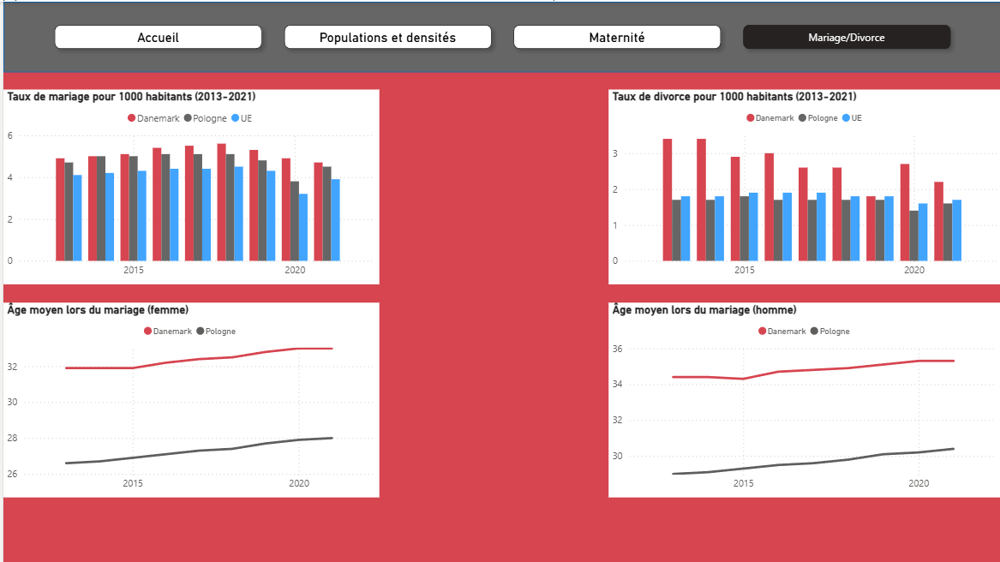

Ce travail consistait à créer un tableau de bord avec Power BI. Il s'agit d'une application permettant de créer des tableaux de bord dynamiques en se basant sur des données issues de fichiers ou de pages web. Cela permet une visualisation plus claire et précise des informations demandées.
Pour ce travail, nous devions comparer deux pays européens sur différents aspects démographiques sur plusieurs années, souligner les différences, les points communs entre ces deux pays et les comparer avec l'union européenne, tout cela grâce à des graphiques et différents indicateurs et éléments que propose Power BI.
Le choix des deux pays s'est porté sur le Danemark et la Pologne. Une page du Power BI devait servir à comparer ces deux pays sur un aspect (comme la population, le mariage, le divorce...).